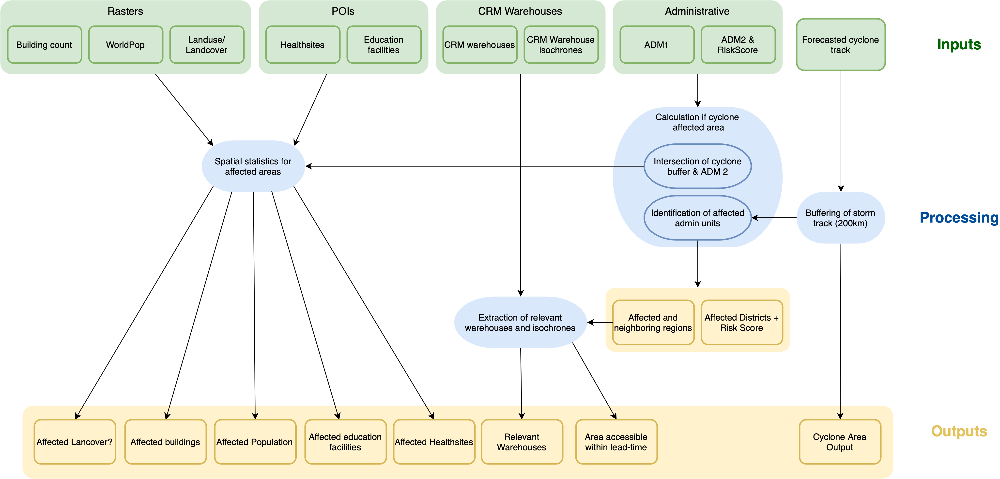
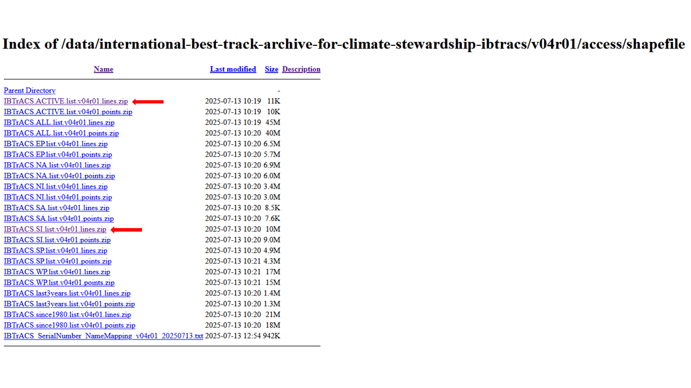

QGIS Trigger Workflow for Madagascar#
The QGIS workflow presented in this article was developed in the framework of the Forecast-based-Action (FbF) Project of the Croix-Rouge Malagasy (CRM), the German Red Cross (GRC) and the Heidelberg Institute for Geoinformation Technology (HeiGIT).
The workflow is almost fully automated through a QGIS model, requiring no manual intervention. The chapter Automated Trigger Workflow outlines the process and its practical implementation. Each step included in the model is explained in detail to provide a complete understanding of the workflow and how the analysis was carried out.
Background#
Setting triggers is one of the cornerstones of the Forecast-based Financing system. For a National Society to have access to automatically released funding for their early actions, their Early Action Protocol needs to clearly define where and when funds will be allocated, and assistance will be provided. In FbF, this is decided according to specific threshold values, so-called triggers, based on weather and climate forecasts, which are defined for each region (see FbF Manual).
Trigger Statement#
Pre-Activation Trigger: at least one of the meteorological forecasts from Meteo Madagascar, RMSC La Reunion, or ECMWF projects a greater than 50% likelihood of landfall by a tropical cyclone of tropical storm strength or higher within the next 7 days.
Activation Trigger: if the Meteo Madagascar (DGM) forecast indicates landfall of a tropical cyclone with wind speeds in excess of 118 km/h within the next 48-72 hours.
Functionality of the Trigger Workflow#
The Trigger Process concept is displayed in the following figure.
{kind=link}

The entire trigger workflow will be run in a QGIS model, which automates the spatial analysis for assessing the impact of tropical cyclones. It integrates cyclone storm track data with administrative boundaries, population data, infrastructure, and service locations to identify and quantify affected areas and resources.
Trigger Input Data#
For the trigger mechanism to work properly we currently use different datasets: data that we assume to be fixed in the near term, and variable data which describe the datasets that will be checked for triggering on a regular basis depending on the occurrence of anticipated cyclone events.
Fixed Data#
By fixed data we mean datasets that are needed for the trigger to work, that will most probably not change in the near term. In the long term these datasets can be adapted easily.
Dataset |
Source |
Description |
|---|---|---|
Administrative Boundaries |
The administrative boundaries on level 0-4 for Madagascar can be accessed via HDX provided by OCHA. For this trigger mechanism we provide the administrative boundaries on level 1 (regional level) and 2 (district level) as a shapefile. |
|
POI counts |
The POI data (education facilities and health sites) is downloaded using the HOT Export Tool based on OpenStreetMap data. |
|
CRM Warehouses |
||
Population Counts |
The worldpop dataset in raster format provides the estimated total number of people per grid-cell for the year 2020. We will be working with the Constrained Individual countries 2020 dataset at a resolution of 100m. |
|
Buildings Counts |
The building counts dataset in raster format counts the number of buildings per 100m grid cell. The workflow on how this dataset was created can be found on GitLab |
|
Land Cover |
The land cover dataset in raster format provides an overview over the dominant land cover type at a resolution of 100m. The workflow on how this dataset was downloaded can be found on GitLab |
Master Raster
The three raster datasets are combined into a Master Raster — a multi-band raster layer with a spatial resolution of 100 meters. This composite layer includes the following information across three channels:
Population counts per grid cell from Worldpop constrained (2020)
Building counts per grid cell derived from ML Building Footprints (2021)
Land Cover type per grid cell derived from Copernicus Land Cover (2019)
Monitoring Data#
The cyclone trigger mechanism is based on the data provided by NOAA (National Centers for Environmental Information). The cyclone storm tracks are provided within the International Best Track Archive for Climate Stewardship (IBTrACS) project. It is the most complete global collection of tropical cyclones available and merges recent and historical tropical cyclone data from multiple agencies to create a unified, publicly available, best-track dataset. IBTrACS was developed collaboratively with all the World Meteorological Organization (WMO) Regional Specialized Meteorological Centres, as well as other organizations and individuals from around the world.
Master Raster
Tropical cyclone track data is available in various subsets, depending on the temporal scale of interest. Regional subsets can also be generated, with data for the South Indian Ocean being particularly relevant for this trigger mechanism.
Automated Trigger Workflow#
As explained at the start of this chapter the developed trigger workflow is done automatically by a QGIS model. In this chapter we will explain its functionality and in a subsequent step it is explained how to run the automated model.
Functionality of the model#
The following key processing steps are run inside the model:
Cyclone Buffering & Impact Area Extraction The new cyclone track is buffered to create a zone of potential impact. This buffer is dissolved to form a single affected area polygon. The resulting layer is the output cyclone area, used throughout the rest of the model.
Administrative Units Affected Admin 2 (district-level) polygons are intersected with the cyclone buffer to extract the Affected districts. Admin 1 (region-level) boundaries are also extracted and used to identify neighboring regions that may still be at risk.
Population Impact Zonal statistics are used to calculate the total affected population within the cyclone area. The result is saved as Affected Population and exported to a spreadsheet.
Infrastructure Impact The model intersects the cyclone area with:
Building data to count number of affected buildings.
POIs (Points of interest) to identify affected education facilities and health site infrastructure. The results are exported as:
Affected Buildings
Affected POIs Table, including a count of impacted education and health sites.
Warehouse Accessibility Using the affected regions and buffered road data, the model identifies:
Relevant Technicians
Warehouses within reach of the affected area. The output layer is relevant warehouses, indicating logistical support readiness.
How to run the model#
The QGIS Model Designer is a visual tool that allows users to create and edit a workflow with all tools available in QGIS that can be used repeatedly in a simple and time-efficient manner. It provides a graphical interface to build workflows by connecting geoprocessing tools and algorithms. The user can define inputs, outputs, and the flow of data between different processing steps.
Step 1: Setting up folder structure !!NEEDS TO BE FIXED!!#

Purpose: In this step we set up the correct folder structure to make the analysis easier and to ensure consistent results.
Tool: No special tools or programs are needed
Instruction |
Folder Structure |
|---|---|
|

|
The Video below shows the process for setting up the folder for december 2023.
Step 2: Download of the storm track data#
The International Best Track Archive for Climate Stewardship (IBTrACS) v04r01 data is updated three times a week (usually on Sunday, Tuesday, and Thursday), and could be updated more frequently to address specific needs and use cases. The latest updates in the correct file format can be found on their website:
Look for the
Access Methodssection and click onShapefiles. The link leads to the following website which can also be seen in the figure below.Since we don’t need storm track data for the entire world or the full archive, we will download only a relevant subset. Locate for the file named
IBTrACS.ACTIVE.list.v04r01.lines.zipand click on it - the download should begin automatically.Unzip the file and open it in QGIS.
Open the attribute table and delete all the storm tracks that are not relevant for this analysis. Safe the updated storm track file.
Note
The storm track subset IBTrACS.ACTIVE.list.v04r01.lines.zip contains all storms active in the last 7 days. If more comprehensive data is needed, it is advisable to download a subset by basin. For Madagascar, the most relevant region is SI – South Indian, which includes our Area of Interest. This dataset can be downloaded from the same website under the name IBTrACS.SI.list.v04r01.lines.zip.
{kind=link}

Step 3: Open the project in QGIS and load the model in the QGIS Model Designer#
In this step we will open our Trigger project in QGIS and load the QGIS model which will automatically run the analysis for us.
Open the file
Trigger_Model.qgzby double clicking it.The file will open and you will lots of data pre-loaded. This data is required for running the QGIS model.
The data will be structured in three Groups:
IMAGE OF A SCREENSHOT OF THE THREE GROUPS WITH ALL THE PRE-LOADED DATA
Group 1: Model_Input This group will contain all the input data that is required to successfully run the model. All the data that is stored in this section is fixed except the storm track.
Attention
Always ensure you are using the most recently updated storm track for this process. To import the new layer, simply drag and drop it into the Layers panel, and place it at the top of the Model_Input group for clarity.
For better data management, assign the storm track a descriptive name, such as storm_track_Freddy_2023. This naming convention clearly identifies the event and year, helping you stay organized and ensuring the correct data is used in the analysis.
Group 2: Map_Cyclone_Impact_Overview This group will contain all the layers needed to create the following map.
SCREENSHOT OF THE OUTPUT MAP
The following layers are required to create this map: Pre-loaded:
input storm track
admin 1 boundaries
Group 3: Map_Cyclone_Impact_Assessment
Now open the QGIS Model Designer. The tool can be accessed under
Processing->Modeler DesignerIn the upper panel click
Model->Open Modeland navigate to your folder “FbF_Cyclone_Monitoring_Trigger”, mark the “Cyclones_EAP_MAD_Trigger.model3” file an click onOpen. The model will open and you will see yellow, white, green and grey boxes.
Box |
Significance |
Description |
|---|---|---|
Yellow |
Model Input |
Definition of the input data for the model the model will perform on. |
White |
Algorithms |
Algorithms or Tools are specific geoprocessing steps that perform specific tasks, such as clipping, reprojecting or buffering. |
Green |
Model Output |
The results created by the model (Output layers) are automatically added to your layers panel in your QGIS project interface. |
Grey |
Comments |
The boxes are used to further explain the specific processes. |
Step 4: Run the model !!NAMES IN THIS SECTION NEED TO BE FINALIZED!!#

Model Input & Output
Attention
In the dropdown list, only layers that are currently loaded in your QGIS Project will be displayed.
For each of these mandatory inputs, you click on the dropdown arrow and choose the respective file.
In the upper panel click on
Model->Run Model. A new window will open where you need to define the model input and output.The model needs the following 7 inputs:
mdg_admbnda_adm1_BNGRC_OCHA_20181031: ADM1ADM2_RISK: ADM2 & RiskIsochrones: CRM warehouse isochrones20240108_MAD_CRM_Warehouses_updated: CRM warehousesIBTrACS.ACTIVE.list.v04r01.lines: Cyclone Trackshotosm_master_poi: Master_POIMAD_pop_constrained_buildings_landcover: Master Raster
THIS ENTIRE LIST NEEDS UPDATED NAMES
Further down, you have to specify where to save the output:
Trigger_activation: Click on the three points ->
-> Save to Fileand navigate toResultsfolder in the folder you created in step 1 (Year_month). Give the output the name:
Trigger_activation
Indices: Click on the three points-> Save to Fileand navigate toResultsfolder in the folder you created in step 1 (Year_month). Give the output the name:
Indices
IPC_Phase_C:Click on the three points-> Save to Fileand navigate toResultsfolder in the folder you created in step 1 (Year_month). Give the output the name:
IPC_Phase_C
IPC_Phase_P:Click on the three points-> Save to Fileand navigate toResultsfolder in the folder you created in step 1 (Year_month). Give the output the name:
IPC_Phase_P
Click
Run. Your results layer will appear in the main QGIS window. You can close the graphical modeller window.
Video: Input and output Model

Step 5: Visualisation and Styling of the Model Outputs#
We will generate two output maps to support the analysis:
Map 1 will provide an overview of the affected districts, the extent of the cyclone event, and the locations of relevant warehouses.
Map 2 will focus on the impact to infrastructure and population, displaying the number of affected people, buildings, health sites, and education facilities.
Additionally, a map showing the warehouse isochrones for all 13 warehouses will be provided by HeiGIT.
NEED NEW IMAGE

Purpose: Definition of how features are represented visually on the map.
Tool: Symbology tab
Cyclone Impact Overview: Affected Districts, Event Extent, and Warehouse Locations
Right click on the “Affected_districts” layer ->
Properties->SymbologyIn the down left corner click on
Style->Load StyleIn the new window click on the three points
. Navigate to the “FbF_Cyclone_Monitoring_Trigger/layer_styles” folder and select the file “affected_districts_style.qml”.Click
Open. Then click onLoad StyleBack in the “Layer Properties” Window click
ApplyandOK
Do this same process for the following output layers:
relevant warehouses
the input line storm track
and the buffered output cyclone area
NEED NEW IMAGE
Your final output should look like this after styling the layer
You will now see the affected districts and the locations of relevant warehouses clearly displayed on the map. Additionally, the original storm track line — used as input data — is highlighted, along with the buffered impact area, which serves as a proxy for identifying affected districts.

Impact Assessment: Affected Population and Critical Infrastructure
Right click on the “affected_population” layer ->
Properties->SymbologyIn the down left corner click on
Style->Load StyleIn the new window click on the three points
. Navigate to the “FbF_Cyclone_Monitoring_Trigger/layer_styles” folder and select the file “affected_population.qml” style layer.Click
Open. Then click onLoad StyleBack in the “Layer Properties” Window click
ApplyandOK
Do this same process for the following output layers:
affected_buildings
affected_education_facilities
affected_healthsites
the input line storm track
and the buffered output cyclone area
Administrative 2 Boundaries (Regions)
Right click on the “Som_Admbnda_Adm1_UNDP” (Regiond) layer ->
Properties->SymbologyIn the down left corner click on
Style->Load StyleIn the new window click on the three points
. Navigate to the “FbF_Drought_Monitoring_Trigger/layer_styles” folder and select the file “somalia_risk_assessment_style.qml”.Click
Open. Then click onLoad StyleBack in the “Layer Properties” Window click
ApplyandOKAdd a the OpenStreetMap basemap by clicking on
Layer->Add Layer->Add XYZ layer...-> Select the OpenStreetMap. ClickAdd. (Wiki basemap)Place the OpenStreetMap basemap on the bottom.
Delet all layers exept:
Trigger_activation
risk_assessment_districts
Som_Admbnda_Adm1_UNDP
OpenStreetMap
Video: Visualisation of results
Intervention Map without Trigger activation |
Intervention Map with Trigger activation |
|---|---|

|
|
Attention
Remember the layer concept and make sure the basemap layer is at the bottom of your layers panel.
Step 6: Making the Print Map#

Purpose: Viualisation of the map features in a printable map layout
Tool: Print Layout
If not done before, delet all layers expect Trigger_activation, risk_assessment_districts and OpenStreetMap
Open a new print layout by clicking on
Project->New Print Layout-> enter the name of your current Project e.g “2022_04”.Go the the FbF_Drought_Monitoring_Trigger
folder and drag and drop the fileTrigger_activation_Intervention_map.qpt` in the print layoutChange the date to the current date by clicking on “Further map info…” in the items panel. Click on the
Item Propertiestab and scroll down. Here you can change the date in theMain Propertiesfield.Adjust the Lgend by clicking on the legend in the
Item Propertiestab and scroll down until you see theLegend itemsfield. If it is not there check if you have to open the dropdown. Make sureAuto updateis not checked.Remove all itemes in the legend be clicking on the item and then on the red minus icon below.
Add Trigger_activation and risk_assessment_districts to the legend by clicking on the green plus and click on the layer and click
ok
Video: Making print map
Attention
Make sure you edit the Map Information on the template, e.g. current date. Also make sure to check the legend items: Remove unnecessary items and eventually change the names to meaning descriptions.
In order to easily visualize the output of the trigger analysis we provide you with a map template that can be used as a base for your visualization. You can find the template in the following directory: “…/FbF_Drought_Monitoring_Trigger/maps_somalia_template_risk_assessment.qpt”.
You can also adapt the template to your needs and preferences. You can find help here.
Attention
Make sure you edit the Map Information on the template, e.g. current date. Also make sure to check the legend items: Remove unnecessary items and eventually change the names to meaning descriptions.
Step 7: Exporting the Map#

Purpose: Export the designed and finalized map layout in order tp print it as a pdf or format of your choice.
Tool: Print Layout
When you have finished the design of you map you can export it as pdf or image file in different datafromats.
Export as Image
In the print layout click on
Layer->Export as ImageChose the Result folder in the folder you have created in step 1. Give the file the name of the project e.g 2022_04
Click on
SaveThe window “Image Export Options” will appear. Click
SaveNow the image can be found in the result folder in the folder you created in Step 1
Export as PDF
In the print layout click on
Layer->Export as PDFChose the Result folder in the folder you have created in step 1. Give the file the name of the project e.g 2022_04
Click on
SaveThe window “PDF Export Options” will appear. For the best results, select the
losslessimage compression.Click
SaveNow the image can be found in the result folder in the folder you created in Step 1
Video: Export image and PDF